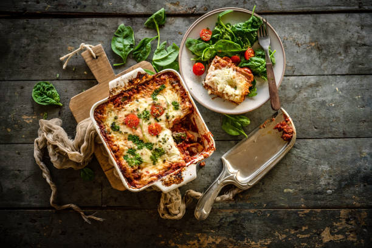

lasagna recipe

Lasagna is a rich, hearty Italian dish composed of layers of wide, flat pasta, each sheet supporting a balanced mixture of flavors. It typically includes savory, seasoned ground meat or vegetables, a creamy ricotta or béchamel layer, and marinara or meat sauce. These ingredients, interlaced with gooey mozzarella and parmesan, meld together in the oven, creating a golden, bubbling top layer. When baked, lasagna's layers infuse, capturing a balance of creamy, tangy, and umami-rich flavors in every bite. This comfort food embodies warmth and a satisfying depth that makes it a beloved classic.
ingredients
- 12 lasagna noodles
- 1 lb ground beef
- 1 jar marinara sauce
- 1 lb ricotta cheese
- 1 large egg
- 3 cups shredded mozzarella cheese
- 1/4 cup grated parmesan cheese
steps
- Cook the Noodles: Boil lasagna noodles according to package instructions, then drain and set aside.
- Prepare the Meat Sauce: In a skillet, cook 1 lb ground beef over medium heat until browned. Drain any excess fat, then stir in the jar of marinara sauce and let it simmer for a few minutes.
- Mix the Ricotta Layer: In a bowl, combine 1 lb ricotta cheese with 1 large egg and stir until smooth.
- Assemble the Lasagna: In a baking dish, start with a thin layer of meat sauce. Then layer as follows:
- Place 3-4 noodles over the sauce.
- Spread a layer of the ricotta mixture.
- Sprinkle with mozzarella cheese.
- Repeat layers, ending with a layer of meat sauce on top, then sprinkle with the remaining mozzarella and parmesan cheese.
- Bake: Cover with foil and bake at 375°F (190°C) for 25 minutes. Remove foil and bake for another 10-15 minutes, until cheese is bubbly and golden.
- Cool and Serve: Let it cool for 10 minutes before slicing. Enjoy!